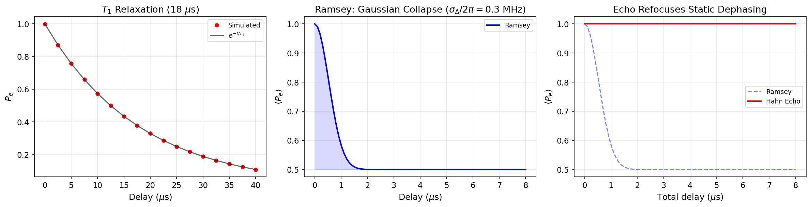

Tutorial: Open System Dynamics — T1, Ramsey & Spin Echo¶
Simulate qubit energy relaxation, Ramsey dephasing fringes, and spin-echo refocusing using Lindblad open-system evolution.
Notebooks:
tutorials/11_qubit_T1_relaxation.ipynb— exponential energy decaytutorials/12_qubit_ramsey_T2star.ipynb— Ramsey fringes with dephasingtutorials/13_spin_echo_and_dephasing_mitigation.ipynb— echo vs Ramsey comparison
Physics Background¶
T1: Energy Relaxation¶
A qubit prepared in \(|e\rangle\) decays to \(|g\rangle\) with rate \(\Gamma_1 = 1/T_1\):
In cqed_sim, this is modeled by Lindblad collapse operators using NoiseSpec(t1=...).
T2*: Ramsey Dephasing¶
A Ramsey sequence (X90 — delay \(\tau\) — X90) probes the qubit's phase coherence. With detuning \(\Delta\) and dephasing time \(T_2^*\):
The fringes oscillate at the detuning frequency with an exponentially decaying envelope set by \(T_2^*\).
Hahn Spin Echo¶
A Hahn echo sequence (X90 — \(\tau/2\) — \(\pi\) — \(\tau/2\) — X90) inserts a refocusing \(\pi\)-pulse that cancels static frequency errors. Under quasi-static detuning with Gaussian distribution \(\sigma_\Delta\):
- Ramsey: \(\langle P_e(\tau)\rangle = \frac{1}{2}(1 + e^{-\sigma_\Delta^2 \tau^2/2})\) — Gaussian collapse to 0.5
- Echo: \(\langle P_e(\tau)\rangle \approx 1.0\) — refocused, stays near unity
The echo demonstrates that static dephasing is fully reversible.
T1 Relaxation¶
import numpy as np
from cqed_sim.core import (
DispersiveTransmonCavityModel, FrameSpec,
StatePreparationSpec, qubit_state, fock_state, prepare_state,
)
from cqed_sim.sim import NoiseSpec, SimulationConfig, simulate_sequence, reduced_qubit_state
from cqed_sim.sequence import SequenceCompiler
model = DispersiveTransmonCavityModel(
omega_c=2*np.pi*5e9, omega_q=2*np.pi*6e9,
alpha=2*np.pi*(-220e6), chi=2*np.pi*(-2.5e6),
kerr=2*np.pi*(-2e3), n_cav=4, n_tr=2,
)
frame = FrameSpec(omega_c_frame=model.omega_c, omega_q_frame=model.omega_q)
# Start in |e,0⟩ and let it decay
psi_e = prepare_state(model, StatePreparationSpec(
qubit=qubit_state("e"), storage=fock_state(0),
))
noise = NoiseSpec(t1=18e-6)
delays = np.linspace(0, 40e-6, 17)
pe_values = []
for delay in delays:
compiled = SequenceCompiler(dt=2e-9).compile([], t_end=max(delay, 4e-9))
result = simulate_sequence(model, compiled, psi_e, {},
config=SimulationConfig(frame=frame), noise=noise)
rho_q = reduced_qubit_state(result.final_state)
pe_values.append(float(np.real(rho_q[1, 1])))
Results¶

Left panel — T1: Red dots show simulated \(P_e\) vs delay for a qubit starting in \(|e\rangle\) with \(T_1 = 18\,\mu\)s. The black curve is the theoretical \(e^{-t/T_1}\). Agreement validates the Lindblad noise model.
Center panel — Ramsey: A Ramsey fringe envelope under Gaussian quasi-static detuning (\(\sigma_\Delta/2\pi = 0.3\) MHz) shows the characteristic Gaussian collapse of \(P_e\) toward 0.5.
Right panel — Echo vs Ramsey: The dashed blue curve (Ramsey) collapses rapidly, while the solid red curve (Hahn echo) remains near \(P_e = 1.0\), demonstrating that static phase errors are fully refocused by the \(\pi\)-pulse.
Key Parameters¶
| Parameter | Physical Meaning | Typical Value |
|---|---|---|
| \(T_1\) | Energy relaxation time | 10–100 \(\mu\)s |
| \(T_2^*\) | Inhomogeneous dephasing time | 1–20 \(\mu\)s |
| \(T_2\) | Hahn echo coherence time | \(\leq 2T_1\) |
| \(\sigma_\Delta\) | Quasi-static detuning width | 0.1–1 MHz |
References¶
[1] Michael A. Nielsen and Isaac L. Chuang, "Quantum Computation and Quantum Information," Cambridge University Press (2000).
[2] Alexandre Blais, Arne L. Grimsmo, S. M. Girvin, and Andreas Wallraff, "Circuit quantum electrodynamics," Reviews of Modern Physics 93, 025005 (2021). DOI: 10.1103/RevModPhys.93.025005
See Also¶
- Qubit Drive & Rabi — pulse-level qubit control
- Storage Cavity Dynamics — bosonic open-system decay
- Calibration Workflow — complete calibration including T1, Ramsey, echo